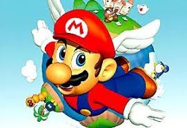

Super Mario 64e
Invitado por la princesa Peach a su castillo, Mario descubre que la hermosa princesa ha sido una vez más raptada por Bowser y sus secuaces. Sin embargo, esta vez es diferente... ¡Esta vez el mundo es en 3D!
Atravesando cuadros que cuelgan de las paredes, busca 120 Estrellas de Poder escondidas en 15 inmensos y mágicos mundos cargados de sobrecogedoras carreras de obstáculos, ítems ocultos, enigmas y un ejército de enemigos. Mario tiene un enorme repertorio de movimientos: corre, salta, nada, pisa fuerte y golpea, además hace volteretas que pueden ayudarle a alcanzar hasta las plataformas más elevadas. Las gorras especiales le proporcionan poderes temporales, incluida la capacidad de volar y, si le arrebatan la gorra, tendrá que intentar recuperarla cuanto antes.
Mario se mueve con libertad por prados cubiertos de hierba, anda de puntillas por lúgubres mazmorras, escala hasta la cima de una montaña cubierta de nieve, camina sobre lagos de lava ardiente y nada en el foso del castillo. Puede explorar una ancestral pirámide e incluso enfrentarse a los Koopas para conseguir premios fabulosos. Y por supuesto, tendrá que enfrentarse a su eterno rival Bowser, el Rey de los Koopas, y no una, ¡sino tres veces!